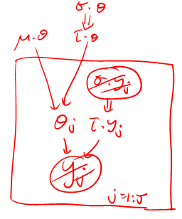
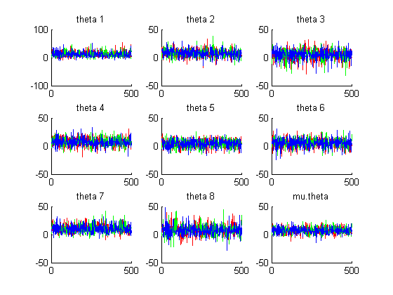
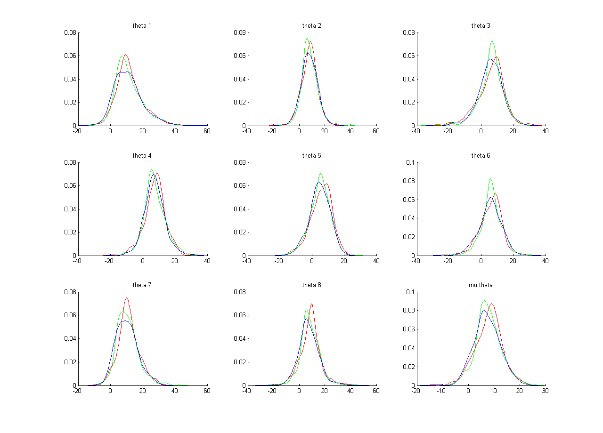
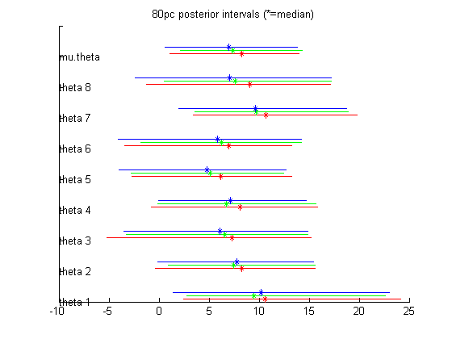

Consider the following example from Gelman et al, "Bayesian data analysis", p138. We want to estimate the performance of 8 schools on a standardized test. Let y_j be the average score of school j and sigma_j be the corresponding standard deviation, for j=1:J where J=8. Let theta_j be the "true" score of school j. Since we expect schools to have similar scores, we will assume that each theta_j is drawn from a common prior, theta_j ~ N(mu.theta, tau.theta), where tau.theta is the precision of the prior. This lets us share information between schools (c.f. "soft weight sharing" in a neural network). This is illustrated below.

Let us use an uninformative prior for mu.theta and sigma.theta, and a Gaussian observation model. In BUGS,
Y <- f(X)means Y is a deterministic function of X. This is denoted by a double arrow in the picture above. For example,
Y <- pow(X,2)means Y=X^2.
model {
for (j in 1:J){ # J=8, the number of schools
y[j] ~ dnorm (theta[j], tau.y[j]) # data model: the likelihood
tau.y[j] <- pow(sigma.y[j], -2) # tau = 1/sigma^2
}
for (j in 1:J){
theta[j] ~ dnorm (mu.theta, tau.theta) # hierarchical model for theta
}
tau.theta <- pow(sigma.theta, -2) # tau = 1/sigma^2
mu.theta ~ dnorm (0.0, 1.0E-6) # noninformative prior on mu
sigma.theta ~ dunif (0, 1000) # noninformative prior on sigma
}
Now we need to specify the data and initial conditions.
In Matlab, we type
dataStruct = struct('J', 8, ...
'y', [28, 8, -3, 7, -1, 1, 18, 12], ...
'sigma_y', [15, 10, 16, 11, 9, 11, 10, 18]);
Nchains = 3;
% we initialize the params to the observed data values, but with decreasing confidence,
% as suggested on p593 of Gelman
for i=1:Nchains
S.theta = dataStruct.y;
S.mu_theta = 0;
S.sigma_theta = 10^i; % each chain becomes more over-dispersed
initStructs(i) = S;
end
Now we call the function.
[samples, stats] = matbugs(dataStruct, ...
fullfile(pwd, 'schools_model.txt'), ...
'init', initStructs, ...
'view', 1, 'nburnin', 1000, 'nsamples', 500, ...
'thin', 10, ...
'monitorParams', {'theta', 'mu_theta', 'sigma_theta'}, ...
'Bugdir', 'C:/Program Files/WinBUGS14');
BUGS produces the following text output:
display(log) check(C:/kmurphy/svnCheckout/root/code/learning/sampling/BUGS/matbugs/schools_model.txt) model is syntactically correct data(C:/kmurphy/svnCheckout/root/code/learning/sampling/BUGS/matbugs/tmp/data.txt) data loaded compile(3) model compiled inits(1,C:/kmurphy/svnCheckout/root/code/learning/sampling/BUGS/matbugs/tmp/init_1.txt) chain initialized but other chain(s) contain uninitialized variables inits(2,C:/kmurphy/svnCheckout/root/code/learning/sampling/BUGS/matbugs/tmp/init_2.txt) chain initialized but other chain(s) contain uninitialized variables inits(3,C:/kmurphy/svnCheckout/root/code/learning/sampling/BUGS/matbugs/tmp/init_3.txt) model is initialized refresh(100) gen.inits() command #Bugs:gen.inits cannot be executed (is greyed out) update(1000) set(theta) set(mu.theta) set(sigma.theta) thin.updater(10) update(500) coda(*,C:/kmurphy/svnCheckout/root/code/learning/sampling/BUGS/matbugs/tmp/coda) stats(*) Node statistics node mean sd MC error 2.5% median 97.5% start sample mu.theta 7.639 5.081 0.1715 -2.524 7.624 18.03 1001 1500 sigma.theta 6.815 5.91 0.2234 0.2156 5.526 22.16 1001 1500 theta[1] 11.6 8.673 0.2949 -1.731 10.16 32.61 1001 1500 theta[2] 7.932 6.199 0.1803 -4.347 7.867 20.51 1001 1500 theta[3] 5.911 8.001 0.2314 -12.09 6.576 20.2 1001 1500 theta[4] 7.467 6.469 0.1899 -5.926 7.29 20.97 1001 1500 theta[5] 5.102 6.35 0.2235 -8.715 5.421 16.25 1001 1500 theta[6] 5.957 6.802 0.2118 -8.824 6.243 18.46 1001 1500 theta[7] 10.59 6.615 0.2096 -0.8319 10.0 25.48 1001 1500 theta[8] 8.143 7.974 0.2524 -7.525 7.934 25.78 1001 1500 history(*,C:/kmurphy/svnCheckout/root/code/learning/sampling/BUGS/matbugs/tmp/history.txt)BUGS also prints graphical traceplots of each of the parameters. It then waits for you to close/ quit it before returning to Matlab. (Set 'view', 0 if you want it to automatically close the window and return to Matlab.)
'samples' are the actual Gibbs samples that were generated.
samples =
mu_theta: [3x500 double]
sigma_theta: [3x500 double]
theta: [3x500x8 double]
The indexing convention is as follows:
scalarVar(chain, sample) vectorVar(chain, sample, dim1) matrixVar(chain, sample, dim1, dim2)'stats' gives means, standard deviation and the EPSR statistics.
>> stats
Rhat: [1x1 struct]
mean: [1x1 struct]
std: [1x1 struct]
>> stats.mean
mu_theta: 7.6393
sigma_theta: 6.8145
theta: [11.5975 7.9320 5.9106 7.4669 5.1025 5.9571 10.5945 8.1431]
> stats.Rhat
mu_theta: 1.0006
sigma_theta: 0.9999
theta: [8x1 double]
You can use the final samples statistics as you please. One trivial thing to do
would be to just make trace plots of the raw samples.
We use a different color for each chain.
N = 8+2; % monitor 10 variables
colors = 'rgb';
for j=1:8
subplot(3,3,j); hold on
for c=1:Nchains
plot(samples.theta(c,:,j), colors(c));
end
title(sprintf('theta %d', j));
end
subplot(3,3,9); hold on
for c=1:Nchains
plot(samples.mu_theta(c,:), colors(c));
end
title(sprintf('mu.theta'))

These plots indicate that the MCMC chains have mixed.
A more interesting thing to do is to make empirical
summaries of the posterior marginals.
Using the 'ksdensity' (kernel smoothing) function in the statistics
toolbox we have
figure(1); clf
for j=1:8
subplot(3,3,j); hold on
%dat = samples.theta(:,:,j);
for c=1:Nchains
[p, x] = ksdensity(samples.theta(c,:,j));
plot(x, p, colors(c));
end
title(sprintf('theta %d', j));
end
subplot(3,3,9); hold on
for c=1:Nchains
[p, x] = ksdensity(samples.mu_theta(c,:));
plot(x, p, colors(c));
end
title(sprintf('mu.theta'))

We can also plot the 80% posterior credible intervals using the 'quantile' function from the statistics toolbox.
% Posterior summaries - intervals
figure(1); clf
hold on
for j=1:8
for c=1:Nchains
q = quantile(samples.theta(c,:,j), [0.1 0.9]);
h = line([q(1) q(2)], [j j]+c*0.1); set(h, 'color', colors(c));
q = quantile(samples.theta(c,:,j), [0.5]);
h=plot(q,j+c*0.1,'*'); set(h, 'color', colors(c));
end
legendstr{j} = sprintf('theta %d', j);
end
j = 9;
for c=1:Nchains
q = quantile(samples.mu_theta(c,:), [0.1 0.9]);
h = line([q(1) q(2)], [j j]+c*0.1); set(h, 'color', colors(c));
q = quantile(samples.mu_theta(c,:), [0.5]);
h=plot(q,j+c*0.1,'*'); set(h, 'color', colors(c));
end
legendstr{j} = sprintf('mu.theta');
set(gca,'yticklabel',[])
xlim = get(gca, 'xlim');
for i=1:j
text(xlim(1), i, legendstr{i});
end
title('80pc posterior intervals (*=median)')
